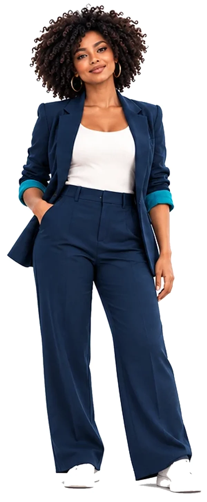
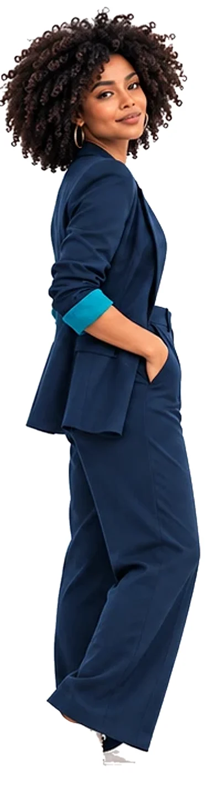
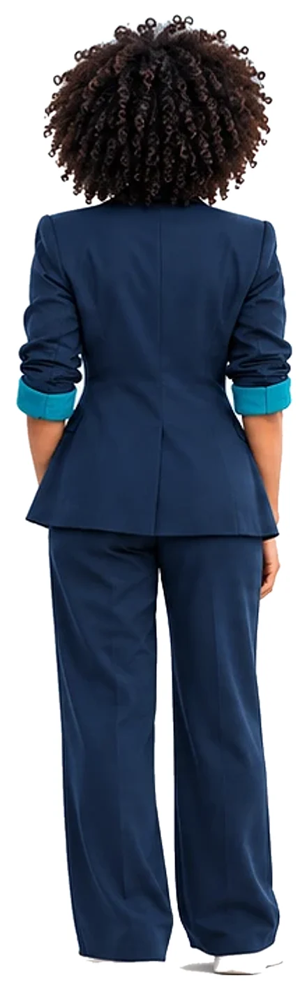
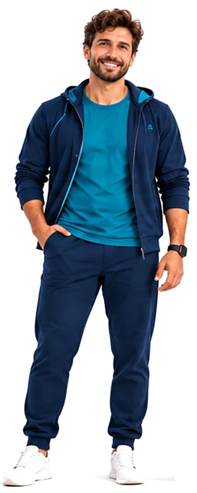
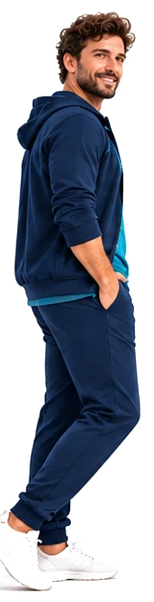
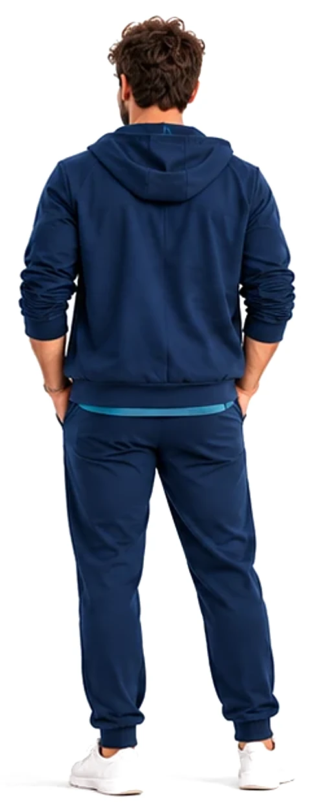

Personagem da marca
em construção
Personagem da marca
Tem alguém novo chegando à UORT.
Temos duas propostas. E antes de mostrá-las, queremos ouvir quem conhece a UORT por dentro.
- Não vai atender consultas.
- Não vai fazer diagnósticos.
- Não vai substituir nenhum especialista.
- Mas vai conversar muito com quem procura a UORT.



Proposta A · Ela
Quem é ela?
Uma personagem digital adulta, com presença real, contemporânea e próxima.
- Identidade
- Mulher negra, brasileira, de Salvador
- Idade
- Adulta, entre 30 e 35 anos
- Corpo
- Esguio, postura natural e confiante
- Cabelo
- Crespo natural, com vários penteados possíveis
- Estilo
- Urbano, casual e esportivo
- Paleta
- Conectada às cores da UORT
Regra de consistência: em qualquer imagem, a mesma mulher.
Pode mudar
penteado · roupa · contexto · expressão · posição
Não muda
traços do rosto · idade aparente · tom de pele · estrutura corporal · identidade



Proposta B · Ele
Quem é ele?
Um personagem digital adulto, com presença real, esportiva e próxima.
- Presença
- Masculina, esportiva e acessível
- Cabelo e barba
- Cacheado natural, barba bem cuidada
- Estilo
- Urbano, esportivo e contemporâneo
- Figurino
- Jaqueta e calça azul-marinho, camiseta teal
- Detalhes
- Smartwatch e tênis branco: tecnologia e movimento
- Paleta
- Conectada às cores da UORT
Regra de consistência: em qualquer imagem, o mesmo homem.
Pode mudar
roupa · contexto · expressão · posição
Não muda
traços do rosto · idade aparente · tom de pele · estrutura corporal · identidade
Obrigado por participar
Agora o novo personagem da UORT tem um pouco de cada um de vocês.
A estratégia e os limites do personagem são responsabilidade da comunicação.
Mas quem vive a UORT todos os dias também pode ajudar a definir quem vai representar a marca, qual será o nome e como vai se relacionar com as pessoas.
Em breve
- Informação.
- Acolhimento.
- Movimento.
Movimento em todas as fases da vida.